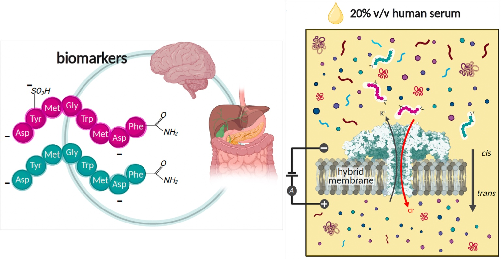
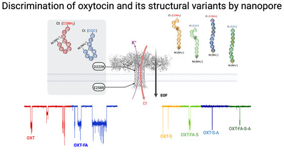
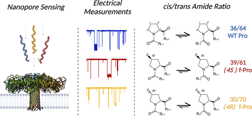
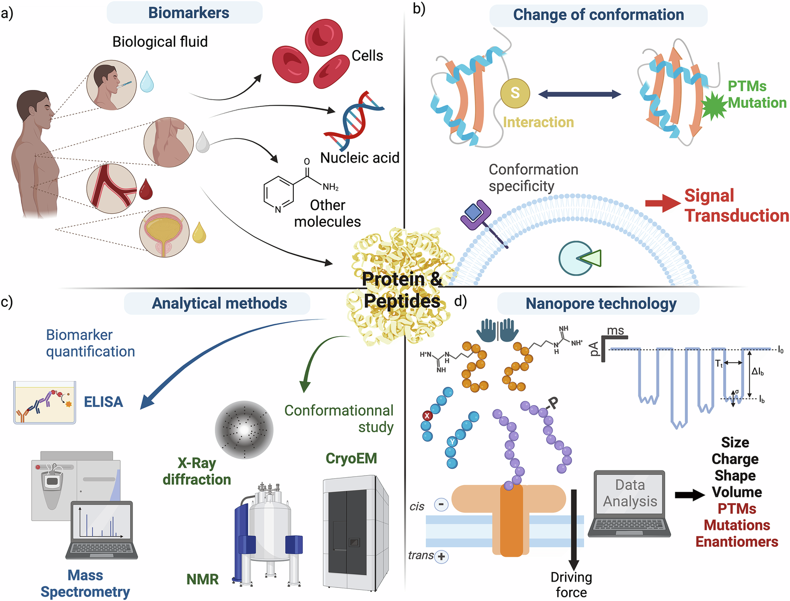
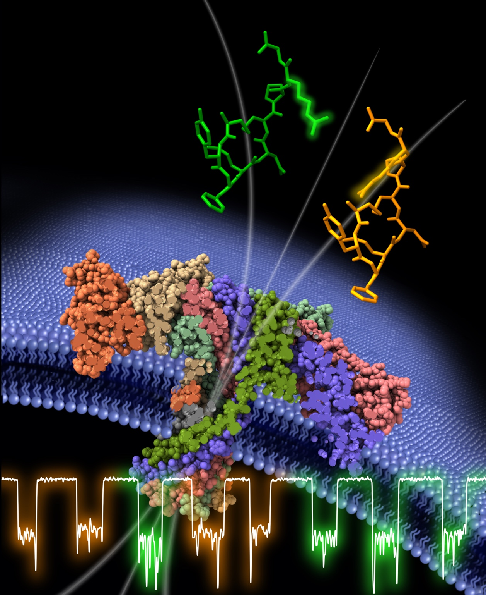
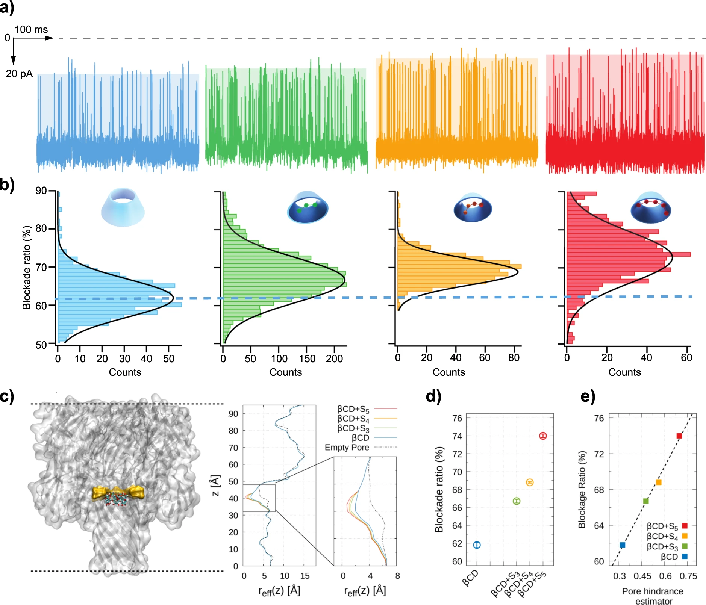

Discrimination of Sulfated and Unsulfated Gut-Hormone Biomarkers in Human Serum
Identification of CCK-8 and SO₃-CCK-8 in a complex human-serum matrix using three complementary nanopore parameters.
View publicationPUBLICATIONS
Selected research landmarks and a complete peer-reviewed record spanning biological and solid-state nanopores, molecular recognition, disease biomarkers and emerging applications.
SELECTED PUBLICATIONS
Six papers that capture the progression from nanopore transport and molecular recognition to biomarker analysis in complex samples.

Identification of CCK-8 and SO₃-CCK-8 in a complex human-serum matrix using three complementary nanopore parameters.

Structural-variant sensing of a behaviour-related neuropeptide through complementary single-molecule electrical signatures.

Direct electrical resolution of conformational isomers generated by proline peptide-bond isomerisation.

A perspective defining the translational potential of nanopore conformational sensing for future diagnostics.

Single-molecule discrimination of chirality in a medically relevant peptide biomarker, featured on the journal cover.

Single-atom resolution applied to molecular species central to lithium–sulfur battery chemistry.
RESEARCH THEMES
Aerolysin engineering, transport physics and electrical fingerprints.
Polymer-assisted transport, confinement and robust sensing conditions.
Peptide variants, conformers, stereoisomers and post-translational modifications.
Digital polymers, battery chemistry and emerging molecular information systems.
COMPLETE RECORD
B. Cressiot is highlighted in each author list; * denotes corresponding authorship.
L. Iesu, L. Bacri, J. Pelta and B. Cressiot
Small · 2026 · DOI: 10.1002/smll.74968
Y. Cai, B. Cressiot, M. Winterhalter, S. Balme, J. Pelta and L. Bacri
Nature Communications · 2026 · DOI: 10.1038/s41467-026-68912-4
Y. Cai, B. Cressiot, S. Balme, E. Raspaud, L. Bacri and J. Pelta
Chemical Science · 2025 · DOI: 10.1039/D5SC05267J
N. Meyer, L. Ratinho, S. Greive, L. Bacri, B. Morozzo della Rocca, M. Chinappi, J. Pelta and B. Cressiot
ACS Nano · 2025 · DOI: 10.1021/acsnano.5c08031
L. Iesu, M. Sai, V. Torbeev, B. Kieffer, J. Pelta and B. Cressiot*
Chemical Science · 2025 · DOI: 10.1039/D5SC01156F
L. Ratinho, N. Meyer, S. Greive, B. Cressiot and J. Pelta
Nature Communications · 2025 · DOI: 10.1038/s41467-025-58509-8
L. Ratinho, L. Bacri, B. Thiebot, B. Cressiot and J. Pelta*
ACS Central Science · 2024 · DOI: 10.1021/acscentsci.4c00020
S. Greive, L. Bacri, B. Cressiot and J. Pelta
ACS Nano · 2023 · DOI: 10.1021/acsnano.3c08433
A. Stierlen, S. Greive, L. Bacri, P. Manivet, B. Cressiot and J. Pelta
ACS Central Science · 2023 · DOI: 10.1021/acscentsci.2c01256
T. Chowdhury, B. Cressiot, C. Parisi, G. Smolyakov, B. Thiebot, L. Trichet, F. M. Fernandes, J. Pelta and P. Manivet
ACS Sensors · 2023 · DOI: 10.1021/acssensors.2c02308
I. Tanimoto, J. Zhang, B. Cressiot, B. Le Pioufle, L. Bacri and J. Pelta
Chemistry – An Asian Journal · 2022 · DOI: 10.1002/asia.202200888
I. Tanimoto, B. Cressiot, S. Greive, B. Le Pioufle, L. Bacri and J. Pelta
Nano Research · 2022 · DOI: 10.1007/s12274-022-4379-2
B. Cressiot and J. Pelta
ACS Central Science · 2022 · DOI: 10.1021/acscentsci.2c00267
I. Tanimoto, B. Cressiot, N. Jarroux, J. Roman, G. Patriarche, B. Le Pioufle, J. Pelta and L. Bacri
Biosensors and Bioelectronics · 2021 · DOI: 10.1016/j.bios.2021.113195
B. Cressiot, L. Bacri and J. Pelta
Small Methods · 2020 · DOI: 10.1002/smtd.202000090
F. Bétermier, B. Cressiot, G. Di Muccio, N. Jarroux, L. Bacri, B. Morozzo della Rocca, M. Chinappi, J. Pelta and J.-M. Tarascon
Communications Materials · 2020 · DOI: 10.1038/s43246-020-00056-4
B. Cressiot, H. Ouldali, M. Pastoriza-Gallego, L. Bacri, G. van der Goot and J. Pelta
ACS Sensors · 2019 · DOI: 10.1021/acssensors.8b01636
B. Cressiot, S. Greive, M. Mojtabavi, A. Antson and M. Wanunu
Nature Communications · 2018 · DOI: 10.1038/s41467-018-07116-x
R. Hu, J. Rodrigues, P. Waduge, H. Yamazaki, B. Cressiot, Y. Chishti, L. Makowski, D. Yu, E. Shakhnovich, Q. Zhao and M. Wanunu
ACS Nano · 2018 · DOI: 10.1021/acsnano.8b00734
B. Cressiot, S. Greive, W. Si, T. Pascoa, M. Mojtabavi, M. Chechik, H. Jenkins, X. Lu, K. Zhang, A. Aksimentiev, A. Antson and M. Wanunu
ACS Nano · 2017 · DOI: 10.1021/acsnano.7b06980
P. Waduge, R. Hu, P. Bandarkar, H. Yamazaki, B. Cressiot, Q. Zhao, P. Whitford and M. Wanunu
ACS Nano · 2017 · DOI: 10.1021/acsnano.7b01212
B. Cressiot, E. Braselmann, A. Oukhaled, A. Elcock, J. Pelta and P. L. Clark
ACS Nano · 2015 · DOI: 10.1021/acsnano.5b03053
B. Cressiot, A. Oukhaled, L. Bacri and J. Pelta
BioNanoScience · 2014 · DOI: 10.1007/s12668-014-0128-7
B. Cressiot, A. Oukhaled, G. Patriarche, M. Pastoriza-Gallego, J.-M. Betton, L. Auvray, M. Muthukumar, L. Bacri and J. Pelta
ACS Nano · 2012 · DOI: 10.1021/nn301672g
C. Merstorf, B. Cressiot, M. Pastoriza-Gallego, A. Oukhaled, J.-M. Betton, L. Auvray and J. Pelta
ACS Chemical Biology · 2012 · DOI: 10.1021/cb2004737
A. Oukhaled, B. Cressiot, L. Bacri, M. Pastoriza-Gallego, J.-M. Betton, E. Bourhis, R. Jede, J. Gierak, L. Auvray and J. Pelta
ACS Nano · 2011 · DOI: 10.1021/nn1034795
C. Merstorf, B. Cressiot, M. Pastoriza-Gallego, A. Oukhaled, L. Bacri, J. Gierak, J. Pelta, L. Auvray and J. Mathé
Nanopore-Based Technology · Methods in Molecular Biology, vol. 870 · Humana Press · DOI: 10.1007/978-1-61779-773-6_4